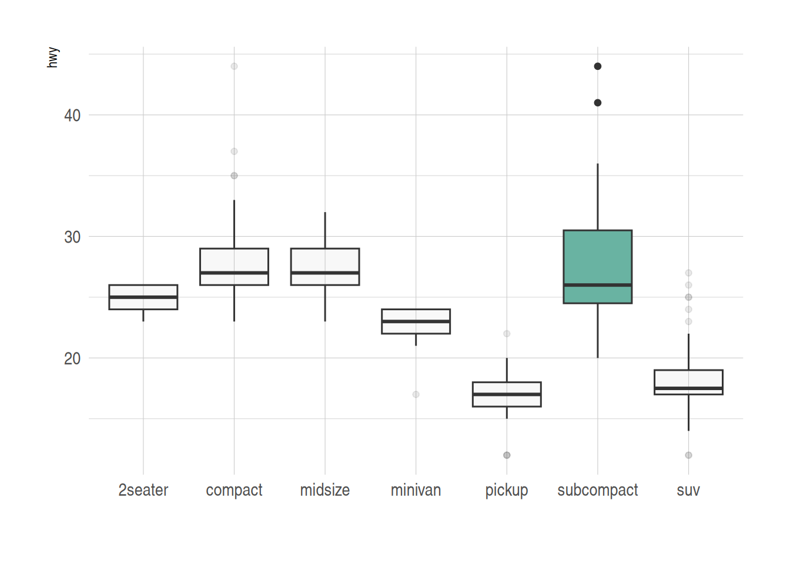
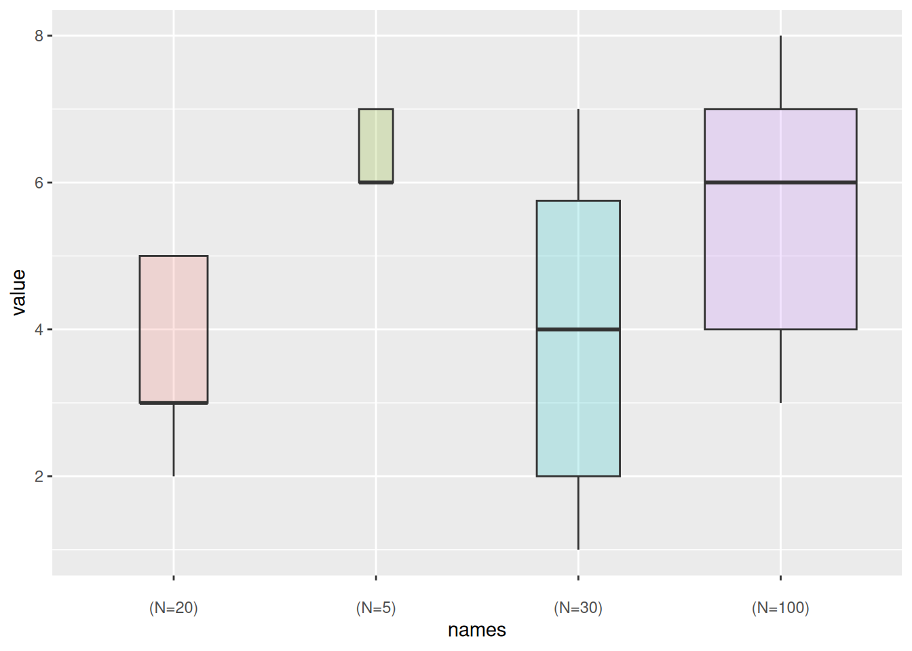
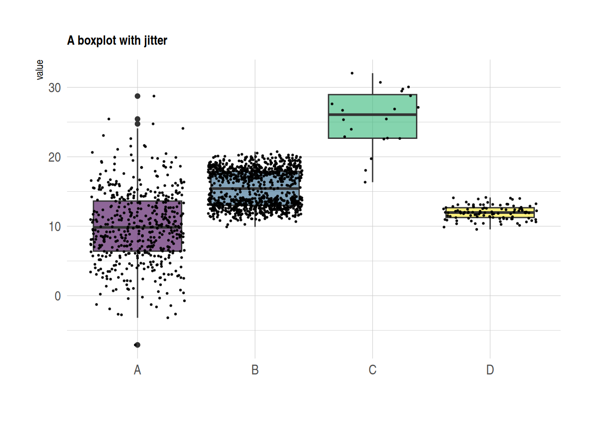
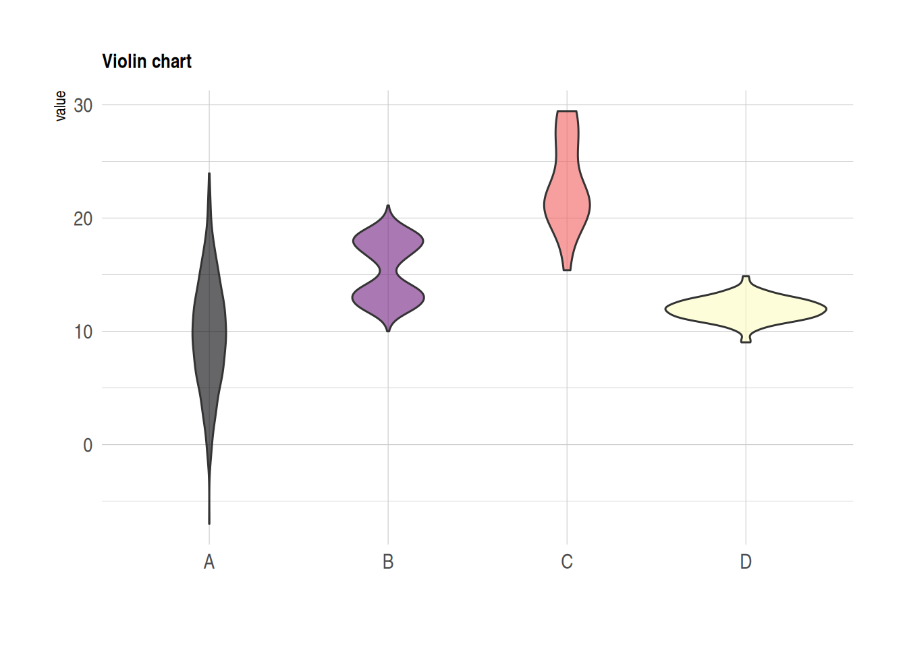
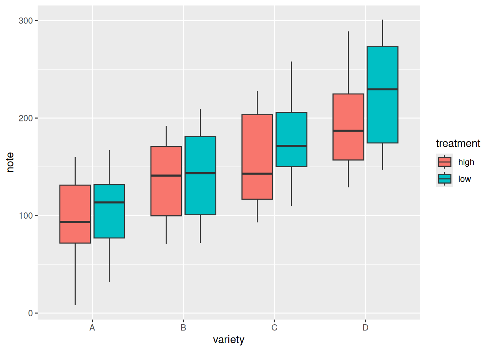
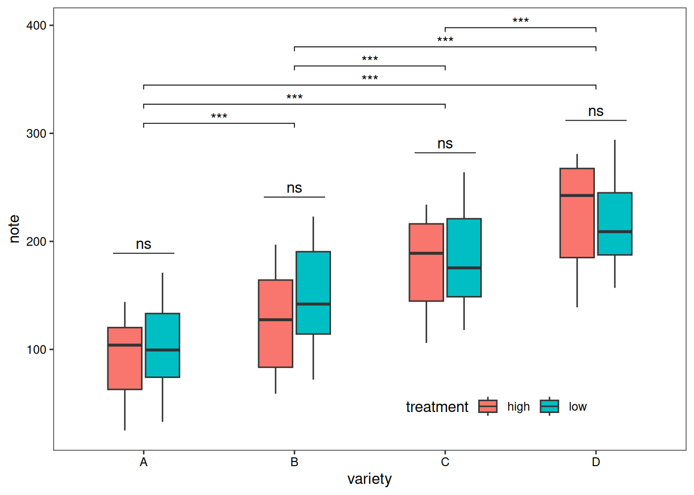
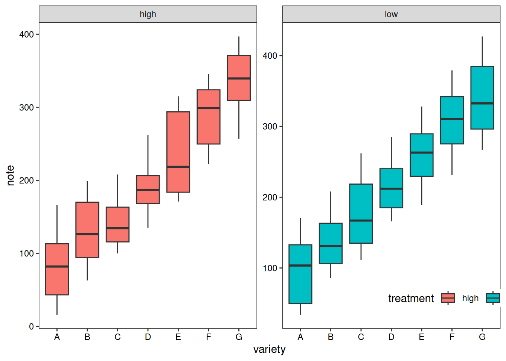
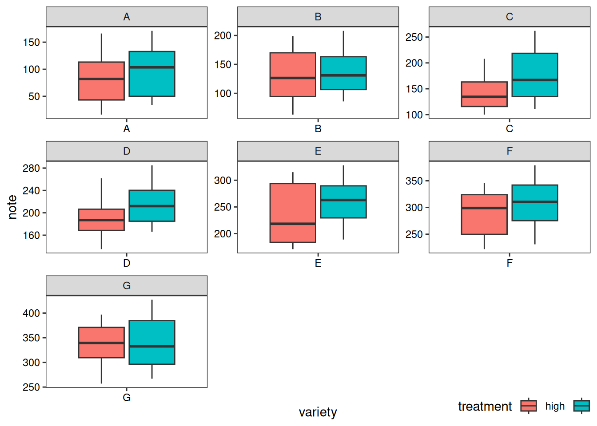

# Installing necessary packages
if (!requireNamespace("readr", quietly = TRUE)) {
install.packages("readr")
}
if (!requireNamespace("ggplot2", quietly = TRUE)) {
install.packages("ggplot2")
}
if (!requireNamespace("dplyr", quietly = TRUE)) {
install.packages("dplyr")
}
if (!requireNamespace("hrbrthemes", quietly = TRUE)) {
remotes::install_github("hrbrmstr/hrbrthemes")
}
if (!requireNamespace("viridis", quietly = TRUE)) {
install.packages("viridis")
}
if (!requireNamespace("ggExtra", quietly = TRUE)) {
install.packages("ggExtra")
}
if (!requireNamespace("ggpubr", quietly = TRUE)) {
install.packages("ggpubr")
}
if (!requireNamespace("rstatix", quietly = TRUE)) {
install.packages("rstatix")
}
if (!requireNamespace("ggtext", quietly = TRUE)) {
install.packages("ggtext")
}
if (!requireNamespace("ggpmisc", quietly = TRUE)) {
install.packages("ggpmisc")
}
# Loading the libraries
library(readr)
library(ggplot2)
library(dplyr)
library(hrbrthemes)
library(viridis)
library(ggpubr)
library(rstatix)
library(ggtext)
library(ggpmisc)
library(ggExtra)Box Plot
Boxplots visualize the central tendency and dispersion of one or more sets of continuous quantitative data. They incorporate statistical measures that not only compare differences across categories but also reveal dispersion, outliers, and distribution patterns.
A boxplot is defined by five key lines: the upper boundary, upper quartile, median, lower quartile, and lower boundary. Points beyond the upper or lower boundary are considered outliers.
Example

Setup
System Requirements: Cross-platform (Linux/MacOS/Windows)
Programming Language: R
Packages:
ggplot2,dplyr,hrbrthemes,viridis,ggExtra,ggpubr,rstatix,ggtext,ggpmisc
Data Preparation
We used the built-in R datasets (mtcars), data from ggplot2 package (mpg, diamonds) and the TCGA-BRCA.htseq_counts.tsv dataset from UCSC Xena DATASETS. Selected genes were chosen for demonstration purposes.
# Load mtcars dataset
data("mtcars")
data_mtcars <- mtcars
# Load mpg dataset from ggplot2 package
data_mpg <- ggplot2::mpg
# Load diamonds dataset from ggplot2 package
data_diamonds <- ggplot2::diamonds
# Load the TCGA-BRCA gene expression dataset from a processed CSV file
data_TCGA <- readr::read_csv("https://bizard-1301043367.cos.ap-guangzhou.myqcloud.com/TCGA-BRCA.htseq_counts_processed.csv")
data_TCGA1 <- data_TCGA[1:5,] %>%
gather(key = "sample",value = "gene_expression",3:1219)Visualization
1. Basic Plotting
Basic Plotting
The ggplot2 package allows the use of geom_boxplot() to create a basic boxplot.
Taking the TCGA-BRCA.htseq_counts.tsv dataset as an example:
ggplot(data_TCGA1, aes(x=as.factor(gene_name), y=gene_expression)) +
geom_boxplot(fill="slateblue", alpha=0.2) + # color fill and font size
xlab("gene_name") # x-axis label
Parameter Adjustment
Taking the mtcars dataset as an example:
ggplot(data_mtcars, aes(x=as.factor(cyl), y=mpg)) +
geom_boxplot(
# box
color="blue",
fill="blue",
alpha=0.2,
# notch
notch=TRUE,
notchwidth = 0.8,
# outliers
outlier.colour="red",
outlier.fill="red",
outlier.size=3
) +
xlab("cyl")
Color Settings
Taking the mpg dataset as an example, several common color scales for boxplots are demonstrated:
ggplot(data_mpg, aes(x=class, y=hwy)) +
geom_boxplot(color="red", fill="orange", alpha=0.2)
ggplot(data_mpg, aes(x=class, y=hwy, fill=class)) +
geom_boxplot(alpha=0.3) +
theme(legend.position="none")
ggplot(data_mpg, aes(x=class, y=hwy, fill=class)) +
geom_boxplot(alpha=0.3) +
theme(legend.position="none") +
scale_fill_brewer(palette="Dark2")
Group Highlighting
Taking the mpg dataset as an example, different colors are set for groups that need to be highlighted:
data_mpg %>%
# add highlighted group, create color vector
mutate(type=ifelse(class=="subcompact","Highlighted","Normal")) %>%
# fill=type, map the color vector to the boxplot
ggplot(aes(x=class, y=hwy, fill=type, alpha=type)) +
geom_boxplot() +
scale_fill_manual(values=c("#69b3a2", "grey")) +
scale_alpha_manual(values=c(1,0.1)) +
theme_ipsum() +
theme(legend.position = "none") +
xlab("")
2. Variable Width Boxplot
The basic boxplot does not display the sample size information of categories. We can draw a variable width boxplot where the box width is proportional to the sample size by using the varwidth parameter.
names <- c(rep("A", 20) , rep("B", 5) , rep("C", 30), rep("D", 100))
value <- c(sample(2:5, 20 , replace=T) , sample(4:10, 5 , replace=T), sample(1:7, 30 , replace=T), sample(3:8, 100 , replace=T))
data <- data.frame(names,value)
# create corresponding x-axis labels
my_xlab <- paste(levels(data$names),"\n(N=",table(data$names),")",sep="")
# plotting
ggplot(data, aes(x=names, y=value, fill=names)) +
geom_boxplot(varwidth = TRUE, alpha=0.2) + # varwidth = TRUE achieves width proportional to sample size
theme(legend.position="none") +
scale_x_discrete(labels=my_xlab)
Taking the mpg dataset as an example again:
ggplot(data_mpg, aes(x=class, y=hwy, fill=class)) +
geom_boxplot(varwidth = TRUE,alpha=0.3) +
theme(legend.position="none") +
scale_fill_brewer(palette="Dark2")
3. Boxplot for Continuous Variables
For continuous variables, we can use the cut_width() function to divide the continuous variable into intervals and then draw the boxplot.
Taking the diamonds dataset as an example:
data_diamonds %>%
# create a new variable, divide the continuous variable into intervals (0.5 as one interval)
mutate(bin=cut_width(carat, width=0.5, boundary=0)) %>%
# plotting, use the divided intervals as x
ggplot(aes(x=bin, y=price)) +
geom_boxplot(fill="#69b3a2") +
theme_ipsum() +
xlab("Carat")4. Boxplot with Mean Values
The basic boxplot displays the median for each group. We can also use the stat_summary() function to add the mean value for each group to the boxplot.
names=c(rep("A", 20) , rep("B", 8) , rep("C", 30), rep("D", 80))
value=c( sample(2:5, 20 , replace=T) , sample(4:10, 8 , replace=T), sample(1:7, 30 , replace=T), sample(3:8, 80 , replace=T) )
data=data.frame(names,value)
# Plotting
p <- ggplot(data, aes(x=names, y=value, fill=names)) +
geom_boxplot(alpha=0.7) +
stat_summary(fun.y=mean, geom="point", shape=20, size=14, color="white", fill="white") +
theme(legend.position="none") +
scale_fill_brewer(palette="Set1")
p
Using the mpg dataset as an example again
ggplot(data_mpg, aes(x=class, y=hwy, fill=class)) +
geom_boxplot(varwidth = TRUE,alpha=0.3) +
stat_summary(fun.y=mean, geom="point", shape=10, size=5, color="black", fill="black") +
# fun.y specifies the type of statistic to add, geom specifies the type of geometric object, shape specifies the shape of the point, and size specifies the size
theme(legend.position="none") +
scale_fill_brewer(palette="Dark2")
5. Scatter Boxplot & Violin Plot
Scatter Boxplot
Boxplots are often used to compare the distributions of multiple groups, but they do not show the specific distribution of the data (for example, it is impossible to determine whether the distribution is normal or bimodal from a boxplot). We can use the geom_jitter() function to add individual observations, allowing us to see the specific distribution of each group.
data <- data.frame(
name=c( rep("A",500), rep("B",500), rep("B",500), rep("C",20), rep('D', 100) ),
value=c( rnorm(500, 10, 5), rnorm(500, 13, 1), rnorm(500, 18, 1), rnorm(20, 25, 4), rnorm(100, 12, 1) )
)
data %>%
ggplot( aes(x=name, y=value, fill=name)) +
geom_boxplot() +
scale_fill_viridis(discrete = TRUE, alpha=0.6) +
geom_jitter(color="black", size=0.4, alpha=0.9) + # Plotting scatter points
theme_ipsum() +
theme(
legend.position="none",
plot.title = element_text(size=11)
) +
ggtitle("A boxplot with jitter") +
xlab("")
Violin Plot
Violin plots combine the features of boxplots and density distribution plots, also showing the specific distribution of observations within groups.
data <- data.frame(
name=c( rep("A",500), rep("B",500), rep("B",500), rep("C",20), rep('D', 100) ),
value=c( rnorm(500, 10, 5), rnorm(500, 13, 1), rnorm(500, 18, 1), rnorm(20, 25, 4), rnorm(100, 12, 1) )
)
data %>%
ggplot( aes(x=name, y=value, fill=name)) +
geom_violin() +
scale_fill_viridis(discrete = TRUE, alpha=0.6, option="A") +
theme_ipsum() +
theme(
legend.position="none",
plot.title = element_text(size=11)
) +
ggtitle("Violin chart") +
xlab("")
6. Grouped Boxplot
On the basis of single-group comparison, we can use the fill parameter to draw grouped boxplots, which facilitates comparisons both between and within groups.
variety=rep(LETTERS[1:4], each=40)
treatment=rep(c("high","low"),each=20)
note=seq(1:160)+sample(1:150, 160, replace=T)
data=data.frame(variety, treatment , note)
# Plotting
ggplot(data, aes(x=variety, y=note, fill=treatment)) + # The fill parameter adds grouping
geom_boxplot()
Adding statistics analysis:
variety=rep(LETTERS[1:4], each=40)
treatment=rep(c("high","low"),each=20)
note=seq(1:160)+sample(1:150, 160, replace=T)
data=data.frame(variety, treatment , note)
# Difference test
# Within groups
df <- data
df$variety <- factor(df$variety)
df_p_val1 <- df %>%
group_by(variety) %>%
wilcox_test(formula = note~treatment) %>%
add_significance(p.col = 'p',cutpoints = c(0,0.001,0.01,0.05,1),symbols = c('***','**','*','ns')) %>%
add_xy_position(x='variety')
# Between groups
df_p_val2 <- df %>%
wilcox_test(formula = note~variety) %>%
add_significance(p.col = 'p',cutpoints = c(0,0.001,0.01,0.05,1),symbols = c('***','**','*','ns')) %>%
add_xy_position()
# Plotting
ggplot()+
geom_boxplot(data = df,mapping = aes(x=variety, y=note, fill=treatment),width=0.5)+
stat_pvalue_manual(df_p_val1,label = '{p.signif}',
tip.length = 0)+
stat_pvalue_manual(df_p_val2,label = '{p.signif}',
tip.length = 0.01,
y.position = df_p_val2$y.position+0.5)+
labs(x='variety',y='note')+
guides(fill=guide_legend(title = 'treatment'))+
theme_test()+
theme(axis.text = element_text(color = 'black'),
plot.caption = element_markdown(face = 'bold'),
legend.position = c(0.7,0.1),
legend.direction = 'horizontal')
In addition to grouped boxplots, we can also draw boxplots for each subgroup separately for comparison.
variety=rep(LETTERS[1:7], each=40)
treatment=rep(c("high","low"),each=20)
note=seq(1:280)+sample(1:150, 280, replace=T)
data1=data.frame(variety, treatment , note)
# treatment as the basis
p1 <- ggplot(data1, aes(x=variety, y=note, fill=treatment)) +
geom_boxplot() +
facet_wrap(~treatment, scale="free")+
labs(x='variety',y='note')+
guides(fill=guide_legend(title = 'treatment'))+
theme_test()+
theme(axis.text = element_text(color = 'black'),
plot.caption = element_markdown(face = 'bold'),
legend.position = c(0.9,0.1),
legend.direction = 'horizontal')
p1
# variety as the basis
p2 <- ggplot(data1, aes(x=variety, y=note, fill=treatment)) +
geom_boxplot() +
facet_wrap(~variety, scale="free")+
labs(x='variety',y='note')+
guides(fill=guide_legend(title = 'treatment'))+
theme_test()+
theme(axis.text = element_text(color = 'black'),
plot.caption = element_markdown(face = 'bold'),
legend.position = c(0.9,-0.05),
legend.direction = 'horizontal')
p2
7. Adding Marginal Distributions to Boxplots
Adding marginal distributions on the X and Y axes is a common visualization method. We can achieve this using the ggExtra package. Here, we mainly introduce the addition of marginal distributions to boxplots.
Taking the mtcars dataset as an example:
# Original scatter plot
p1<-ggplot(data_mtcars, aes(x=wt, y=mpg, color=cyl, size=cyl))+
geom_point()+
theme_bw()+
geom_smooth(method = 'lm', formula = y~x, se = TRUE, show.legend = FALSE) +
stat_poly_eq(aes(label = paste(..eq.label.., ..rr.label.., stat(p.value.label), sep = '~`,`~')),
formula = y~x, parse = TRUE, npcx= 'left', npcy= 'bottom', size = 4)
p1
# Adding marginal boxplot distributions
p1 <- ggMarginal(p1, type="boxplot")
p1
Tip
The main customizable parameters of ggMarginal() are:
sizeto change the size of the marginal plot- All common appearance customization parameters
margins = 'x'ormargins = 'y'to display only one marginal plot
Application
1. Basic Boxplot

Figure E: Fab-PLA results quantified using BlobFinder software and presented in the form of a boxplot. The median is highlighted with a thick line, and the whiskers represent the minimum and maximum values. It shows the distribution of PLA signal quantification data for each group of cells.[1]
2. Highlighted Boxplot

Figure B: Boxplot of probe distance distribution.
Figure D & Figure F: Boxplots of the maximum nuclear cross-sectional area distribution in H2A-overexpressing cells in MDA-MB-453 (D) or HEK293 (F). Groups with significant differences are highlighted.[2]
3. Grouped Boxplot

Figure C: Boxplot of genome size for organisms with H2A that does or does not contain the shown residues.[2]
Reference
[1] Volkmann C, Brings N, Becker M, Hobeika E, Yang J, Reth M. Molecular requirements of the B-cell antigen receptor for sensing monovalent antigens. EMBO J. 2016 Nov 2;35(21):2371-2381. doi: 10.15252/embj.201694177. Epub 2016 Sep 15. PMID: 27634959; PMCID: PMC5090217.
[2] Macadangdang BR, Oberai A, Spektor T, Campos OA, Sheng F, Carey MF, Vogelauer M, Kurdistani SK. Evolution of histone 2A for chromatin compaction in eukaryotes. Elife. 2014 Jun 17;3:e02792. doi: 10.7554/eLife.02792. PMID: 24939988; PMCID: PMC4098067.
[3] H. Wickham. ggplot2: Elegant Graphics for Data Analysis. Springer-Verlag New York, 2016.
[4] Wickham H, François R, Henry L, Müller K, Vaughan D (2023). dplyr: A Grammar of Data Manipulation. R package version 1.1.4, https://CRAN.R-project.org/package=dplyr.
[5] Rudis B (2024). hrbrthemes: Additional Themes, Theme Components and Utilities for ‘ggplot2’. R package version 0.8.7, https://CRAN.R-project.org/package=hrbrthemes.
[6] Wickham H, Averick M, Bryan J, Chang W, McGowan LD, François R, Grolemund G, Hayes A, Henry L, Hester J, Kuhn M, Pedersen TL, Miller E, Bache SM, Müller K, Ooms J, Robinson D, Seidel DP, Spinu V, Takahashi K, Vaughan D, Wilke C, Woo K, Yutani H (2019). “Welcome to the tidyverse.” Journal of Open Source Software, 4(43), 1686. doi:10.21105/joss.01686 https://doi.org/10.21105/joss.01686.
[7] Simon Garnier, Noam Ross, Robert Rudis, Antônio P. Camargo, Marco Sciaini, and Cédric Scherer (2024). viridis(Lite) - Colorblind-Friendly Color Maps for R. viridis package version 0.6.5.
[8] Attali D, Baker C (2023). ggExtra: Add Marginal Histograms to ‘ggplot2’, and More ‘ggplot2’ Enhancements. R package version 0.10.1, https://CRAN.R-project.org/package=ggExtra.